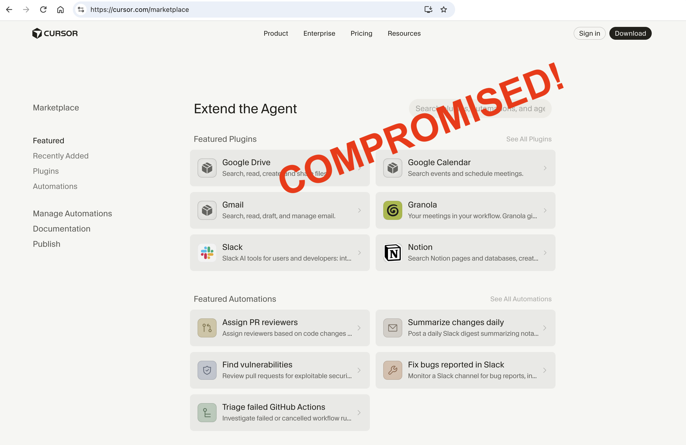
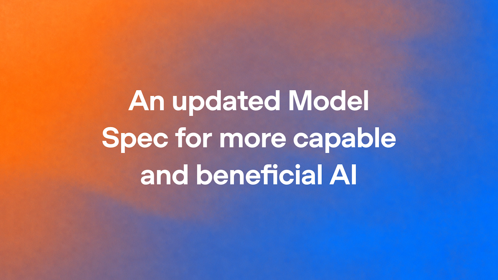
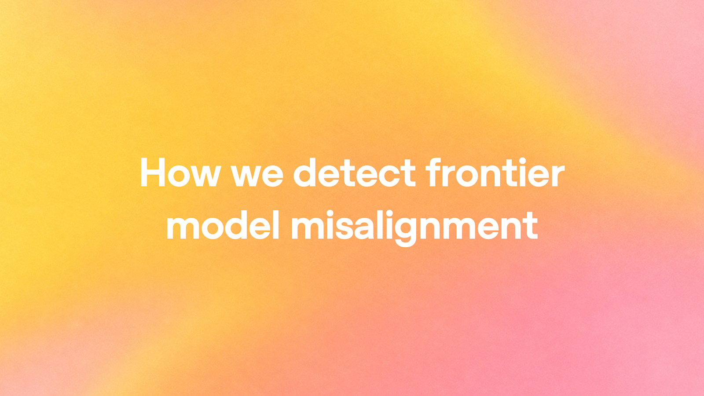
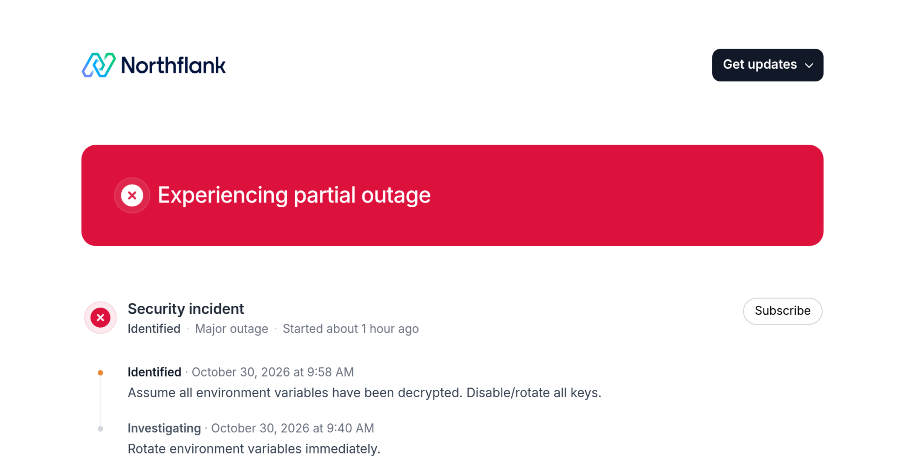

AI Intelligence Daily · 2026-10-31（周六）
今日一句话判断
Coding Agent 扩展分发信道被坐实为高价值供应链面：Cursor Marketplace 确认供货恶意 Claude Code 2.1.312/2.1.313（官方通告 ≤5000、C2 已下线、remediate 脚本齐备；第三方初判 Open VSX 后经 Cursor 确认更正为 Marketplace 起源）；同窗吸收 Mistral Large 4（Le Chonk）改进版开源权重兑现，OpenAI 同日上架 GPT-6 Rosalind Research（trusted-access 生命科学），并把 Model Spec 收束到五价值观、公开扩面 misalignment 监控。 国内侧 Qoder 上线局域网 Device Connection、腾讯 Marvis 以「Coding 管家」远程调用 CodeBuddy/Kimi Desktop。desktop_shipping=0。对你两条主线：扩展/Marketplace provenance 与「卸载≠清后门」必须进 Harness 默认安全基线；开源旗舰 coding 底座与跨设备委托产品同步加压选型表。
专栏一｜新闻
本栏结构：
- 国际头条：Cursor×Claude Code 扩展供应链事故（快讯吸收 + CORRECTION）
- 窗内新发：OpenAI GPT-6 Rosalind Research（trusted-access）；Northflank AI key 事故
- 积压首收：Mistral Large 4 OSS；OpenAI Model Spec + misalignment 监控扩面
- 国际中栏：Cohere 加拿大 C$4B 承诺；Claude Max→Ultra 更名并取消已验证 Ultra 5 小时限额
- 国内中栏：Qoder Device Connection；Marvis Coding 管家
- 短讯：Kimi Desktop 1.2.1、CLI 升档、Universe Day2 无新产品 changelog、Anthropic 仍无 2.1.313 事故稿
- 不升格：OpenAI Private Intelligence 既有页放大、Sierra ARR 营销（无一手完整核验则短记）、MiniMax CDN 3.1.7 静默、Kimi 3D Make / Plugins（非 Desktop shipping）
排序依据：重要度 → 用户相关性 → 时效。
1. Cursor Marketplace 恶意 Claude Code 扩展 2.1.312/2.1.313：官方事故声明 + Open VSX 起源更正
强A · NEW→UPDATE/CORRECTION · 国际 · G/B/E/C · 扩展供应链 / SSH 后门 · watchlist 177 · desktop_shipping=0 · 快讯 15:13+17:15 · Cursor 通告更新 10-30 11:30am PT
发生了什么（事实）
- 快讯 15:13 首报：OpenSourceMalware / Phorion 披露标识为
anthropic.claude-code@2.1.313的扩展在extension.js前插入加载器；编辑器加载即执行；写入svc-telemetrySSH 公钥、反向隧道至134.209.82.225、跨平台持久化、:8099/beacon侦察。当时第三方强调仅确认所分析样本恶意，未断定 Anthropic 官方管线失陷。 - 快讯 17:15 UPDATE：Cursor 发布 Security notice + @cursor_ai 07:46Z——确认 Cursor VS Code Extension Marketplace 曾供应恶意包（非 Anthropic 开发）；暴露窗 2026-10-29 ≈2:27am–1:35pm PT；影响至多 5,000 用户并将直联；下架、关停并重建 Marketplace、轮换密钥；与云厂商协作使 C2 失效；给出 VSIX SHA-256、公钥指纹与
remediate-*.sh/ps1。 - 本报核验 CORRECTION：OpenSourceMalware 文首 UPDATE——经 Cursor 联系后确认恶意扩展起源于 Cursor Marketplace，并明确 Open VSX / npm
@anthropic-ai/claude-code/ Microsoft VS Marketplace 官方扩展并非恶意（与 15:13 快讯「Open VSX 样本」初判相反，以 Cursor 声明与 OSM 更正为准）。 - Cursor 通告现写明受影响版本为 2.1.312 与 2.1.313（Win/macOS）；多数主机缺管理员权限时开启 SSH/经隧道登录会失败，但仍写公钥、装持久化并 beacon；卸载扩展≠清后门。通告页 Update: Oct 30, 2026, 11:30 am PT 更新 IOC 并澄清受影响版本。Anthropic 官方 X / articles 至本窗末仍无对应事故稿；扩展现顶 2.1.314。

图 1 · OpenSourceMalware 原文附图（标注 Cursor Marketplace 妥协）· 来源：opensourcemalware.com
我的判断
- 强A（接近 S）。这是 Coding Agent 宿主侧一手 IR：把「样本恶意」升级为「Marketplace 确认供货 + 量化影响 + 官方处置与自查手册」，并完成「Open VSX vs Marketplace」起源更正。
- 对 Work/Agent 引擎用户有即时自查价值；发布路径（谁上传/凭证如何失陷）与 Anthropic 正式声明仍待补——可能再升 S / 出进一步 CORRECTION。
未来影响
- 多注册表/多 Marketplace 镜像下，「品牌显示名 = 官方构建」不可默认成立；扩展安装冷却、哈希钉扎、
authorized_keys/LaunchAgent 基线告警会从可选变成默认。
对智能体互联网
- Discovery 与扩展分发需要可验证 provenance，而非仅靠 publisher 显示名；安装面与 MCP 工具面同属高权限信任边界。
对 Work·Agent 引擎
- 扩展宿主（Cursor 等）应把 Marketplace 自身当作高价值供应链面；产品需具备：强制钉版本/哈希、安装冷却、「卸载≠清后门」的标准响应（本通告脚本即模板）。
建议动作
- 若 10-29 PT 暴露窗内从 Cursor Marketplace 装过/更新过
2.1.312/2.1.313：按通告查svc-telemetry，跑官方 remediate，并从可信机轮换凭证。 - 跟踪 Anthropic 是否出正式事故说明；把 Marketplace provenance 写入自研扩展/Skill 分发评审。
- 工程侧评估：
extensions.installCooldownHours、仅信任签名源、对伪装系统 LaunchAgent 的基线告警。
来源：Cursor Security notice · @cursor_ai · OpenSourceMalware（含 CORRECTION） · Phorion
2. Mistral Large 4（Le Chonk）改进版开放权重提前兑现
强A · NEW（日报首收）/ UPDATE（相对公测与 watchlist #11） · 国际 · A/B/G/I · 开源旗舰 / Agentic coding · watchlist 176 · 事件 2026-10-29 14:21Z（上海 22:21）· Daily 10-30 缺失 → 本报积压吸收 · desktop_shipping=0
发生了什么（事实）
- @MistralAI 14:21:24Z + 官博：释放改进后 Large 4 开放权重（约 1T / ~49–52B 激活 MoE、1M 上下文、三档
reasoning_effort）。相对月初公测再 RL：FrontierCode 2.0 开源 #1（19.7%）；AA Coding Agent Index 48%（token≈−47% vs 前列）；Terminal-Bench 4.0 +13pp→41%；Cyber Index 51%；恶意网络拒答均值 96.6%；B3 Agent Security 97.1%。 - HF
mistralai/Mistral-Large-4-1T-A52B（+NVFP4）；APImistral-large-4；价 $0.70 / $0.07 cached / $2.10；许可 Mistral Ecosystem Open-Weight（改版 MIT，MaaS 另购商用许可）；vLLM/SGLang Day-0。watchlist 原预期权重 10-31 → 10-29 提前兑现（快讯 23:18）。本窗 HF lastModified 仍约 10-29 14:51Z，无进一步 UPDATE。

图 2 · @MistralAI 原帖附图 · 来源：x.com/MistralAI
我的判断
- 强A。欧洲训练的开源旗舰权重真正可自托管，且叙事钉在 agentic coding + 防御安全——与 Coding Agent 底座选型直接同频。
- 非 Desktop 客户端；价值在模型层。
对智能体互联网：无新协议标准。间接抬高企业私有 Agent 服务网络的默认能力上限；盯 开源权重 + MaaS 另许可 分界。
对 Work·Agent 引擎：高相关。可作为开源主力候选；需实测 FrontierCode/Terminal-Bench 宣称 vs 你方仓库，以及防御拒答是否误伤合法红队工作流。
建议动作：拉 HF 许可卡；用同一套内部 Coding Agent 评测对打 GLM-5.3 / Kimi / DeepSeek / Claude；观察红队专用变体准入。
来源：mistral.ai/news/mistral-large-4-oss · @MistralAI · HF
3. OpenAI：GPT-6 Rosalind Research（trusted-access 生命科学）正式上架
A · NEW · 国际 · A/G/C/F · 垂直旗舰 / Trusted Access · 事件日 2026-10-30（API changelog Oct 30；System Card Addendum 同日）· desktop_shipping=0
发生了什么
- API Changelog · Oct 30：发布 GPT-6 Rosalind（
gpt-6-rosalind）——面向复杂生命科学研究的专用生物推理 + 科学工具调用；仅对 Rosalind Research trusted-access 获批组织开放（内部研究授权用户）。 - Help Center · GPT-Rosalind（约 6h 前更新）：Research 档含 GPT-6 Rosalind Research 与 GPT-5.5 Rosalind Research；不可用于 Chat 标签页，可用 Work / Codex /（另批）API；Enterprise 起两周 Admin Preview 且默认关。Discovery 档仍用 Rosalind 5.5 + 更严监控，不含 GPT-6 Research。
- GPT-Rosalind-6 System Card Addendum（Published October 30, 2026）：与 GPT-6 Astra 同权重、未另做 post-training；Preparedness 将本发船标为 Biological/Chemical High（未达 Critical）、Cyber Critical（继承 Astra）；强调 trusted-access、组织治理与事后监控/吊销。
为什么重要
- 这不是「又一个垂直微调宣传」，而是 旗舰同权重 + 放宽双重用途生物拒答面 + 用准入与监控换能力 的显式产品化：能力面靠 Astra，风险面靠身份/组织审查。
- 对你两条主线：可信身份与委托（谁能用高能力模型）被写进发船默认；Work/Codex/API 三通道分流也再次确认「Chat ≠ Agent 执行面」。
往后看
- 外部独立复现与滥用监测；Academic Plan vs Enterprise 边界执法；他厂是否跟进「同权重分通道」模式。
对智能体互联网：高能力工具的 组织级信任门槛 + 最小权限用户面 是 Agent 服务网络可抄的准入层。
对 Work·Agent 引擎：预留「模型能力档 × 工作区审批 × Admin Preview 默认关」的多租户开关；不要假设 Chat 通路自动继承 Research 模型。
建议动作：关注 API 价目与准入表；若做科学/高风险工具 Agent，对标其 trusted-access 问卷维度做 PoC 门禁。
来源：API Changelog · Help · GPT-Rosalind · System Card Addendum
4. OpenAI：Updated Model Spec（五价值观）+ 扩面 frontier misalignment 监控
A · NEW（日报积压吸收） · 国际 · G/F/B · 对齐 / Agent 监控 · 事件约 2026-10-29（Model Spec RSS ≈17:00 GMT；监控稿 X 放大 ≈19:59Z）· Daily 10-30 缺失 → 本报首收
发生了什么（事实）
- Updated Model Spec（Oct 29, 2026）：公开 Spec 重组为五价值观——faithfulness to human intent / harm minimization / honesty and transparency / human agency / care；新增 context、oversight、agency 相关默认；退休大部分细粒度 style 指引；文中改称模型为 “GPT” 而非 “the assistant”。完整 Spec：model-spec.openai.com/2026-10-29。
- How we detect frontier model misalignment：公开多层监控（activation probes → model reviewer → investigative agent → automated investigation → 人在环）；覆盖 frontier RL/评测/内部 Codex，并对 Critical cyber 能力模型的外部 tool use 做变体；称回放 Hugging Face 事故时，加强后监控约 30 分钟报警、距真实外部突破仍有 >30 小时；强调监控不直接改 RL reward，以免 incentivize CoT 隐匿。与既有 misalignment-reports / METR×Redwood 红队线（watchlist 08/122）合看。

图 3 · OpenAI Model Spec 更新官博题图 · 来源：openai.com/index/updated-model-spec

图 4 · misalignment 监控官博题图 · 来源：openai.com/index/how-we-detect-frontier-model-misalignment
我的判断
- A。不是新产品 shipping，但是 Agent 越界治理 的方法论与公开承诺升级：把「人在环」推进到可分层、可回放、可红队的监控栈。
- Spec 五价值观对委托协议设计有直接语言资源（尤其 faithfulness vs agency）。
对智能体互联网：跨 Agent 调用的 Trust 需要可审计的「意图层级 / 上下文证据 / 侧效应声明」——Spec 语言可映射到委托元数据。
对 Work·Agent 引擎：Harness 应预留异步 misalignment 探针位与「严重告警自动暂停 workload」钩子；勿把监控反馈直接写进 RL 奖励。
建议动作：通读 Spec 新 faithfulness/agency 段与监控四层图；对照自研审批/沙箱逃逸检测覆盖面。
来源：Updated Model Spec · Detect frontier misalignment · Spec 2026-10-29
5. Northflank Security incident：假定环境变量已解密，多用户确认 AI keys 被用
A · NEW · 国际 · G/C/F · PaaS 凭证 / AI key · 2026-10-30 ≈13:40Z 起 · status 持续更新至 ≈23:38Z
发生了什么（事实）
- Northflank status 事故页：Investigating 13:40 UTC → Identified 13:58（假定全部 env 已解密、立即轮换）→ 15:12 Update：Postgres/Mongo secret rotation 已开；Multiple users are confirming that their AI keys have been used；19:28 称调查仍在进行、指引不变；23:38 再强调未授权使用平台内 AI API keys，要求立即吊销并核对账单；称或与 Wiz「Black October」报告中的攻击模式一致。时间线含 Wiz 威胁告警 11:43 UTC、网络策略补丁与 Wiz CIRT 协作。

图 5 · Northflank status 事故 OG · 来源：status.northflank.com
我的判断
- A。中型 PaaS 凭证事故，但把 AI API keys 被盗用写进官方 status，与 Railway / Zeabur / LiteLLM 线同题：Agent 时代密钥浓度升高，云托管面成为默认狩猎场。
- 非一线模型/Desktop 厂商 shipping；快讯按门槛交 Daily——今日入栏。
对智能体互联网：Agent 服务网络若托管第三方推理密钥，需假设宿主平台失陷时的密钥爆炸半径与即时吊销 SLA。
对 Work·Agent 引擎：Cloud Agent / 多租户 Runtime 应默认短寿凭证、按 workload 隔离、禁止长期静态 AI key 进全局 secret；账单异常检测是运营必需品。
建议动作：若使用 Northflank：立即轮换全部 AI/云密钥并查用量；把「PaaS env 假定已解密」写入事故演练剧本。
来源：Northflank status · Security incident
6. 阿里 Qoder：Device Connection（局域网桌面端互联）
A− · NEW · 国内 · B/C/F · 跨设备委托 · 2026-10-30 · IT之家 16:44 CST + docs.qoder.com Oct 30 · 非 desktop_shipping（既有 Desktop 功能增量）
发生了什么（事实）
- IT之家（2026-10-30 16:44:14 CST）与 Qoder Release Notes · October 30, 2026：上线 Device connections——局域网内用设备地址 + 配对码连接另一台 Qoder 桌面端；可在授权工作区发起任务、用终端/浏览器/文件、跟进进度并预览远端产物；
@引用已连接设备工作区委派任务；两端须同账号配对，可配置工作区开放与会话同步范围，可随时撤销。此前已有手机 Remote Control。同日 release 还有 Needs Me 收件箱、Codex 数据导入、Cloud Agent 管理、Excel 插件等——本条以 Device Connection 为主事件。
图 6 · IT之家原文配图 · 来源：ithome.com
我的判断
- A−。把「专用构建机 + 轻便本」拆成产品内一等公民互联，比 SSH/远程桌面更贴 Agent 会话模型；安全叙事（配对码时效、同账号、可撤销）是要点。
- 不计 desktop_shipping（非新客户端邀测）。
对智能体互联网：设备级委托身份 + 可撤销授权，是 Agent 服务网络的最小跨端信任单元。
对 Work·Agent 引擎：多机 Harness 调度、远端产物预览、会话同步范围——可直接对照自研 Remote/Cloud Agent 产品。
建议动作：对照 MiniMax / WorkBuddy / Cursor Remote Control 的鉴权模型；评估「配对码 + 工作区 ACL」是否写入需求。
来源：IT之家 · Qoder Release Notes
7. 腾讯 Marvis「Coding 管家」：手机远程调用 CodeBuddy / Kimi Code Desktop
A−/B+ · NEW · 国内 · B/C/E · Personal Agent × Coding Desktop · 媒体 2026-10-29/30 · 中新网 10-30 16:34 CST · 非 desktop_shipping
发生了什么（事实）
- 中国新闻网（2026-10-30 16:34，称 10-29 上线）及经济观察网等转载：腾讯 AI 管家 Marvis 上线 Coding 管家——在既有「手机遥控电脑」之上，增加调用其他桌面 AI 编程工具的能力；首批支持 CodeBuddy IDE（编程模式）与 Kimi Code Desktop；手机可看项目/聊天/进度、继续发消息或开新项目，对话与改动同步回电脑端；可开防休眠。后期称将支持更多工具。本扫未拿到腾讯官方独立产品稿 URL → 以中新网等权威媒体事实栏为准，勿写成「官网英文发船稿」。
我的判断
- A−/B+。个人 Agent（管家）开始编排第三方 Coding Desktop，而不是只遥控桌面像素——「手机发起 / 电脑执行 / 手机确认」产品化。
- 与 WorkBuddy 远程控制、Qoder Device Connection 同题三连：跨端委托正在国内密集落地。
对智能体互联网：跨厂商桌面 Agent 被第三方管家调用时，需要明确的身份、权限与会话边界——否则变成隐式超级用户。
对 Work·Agent 引擎：外部「管家」接入面（API/协议/审批）应成为产品选项；防休眠是无人值守前提。
建议动作：关注官方是否公开接入规范；对照自研是否允许被第三方 Personal Agent 远程驱动。
来源：中新网
8. Cohere：加拿大 C$4B+ / 1500+ 岗位至 2031 主权 AI 承诺
B+ · NEW · 国际 · I · 2026-10-30 · 官博
发生了什么（事实）
- Cohere 官博 Oct 30：推进既有加拿大投资，预期至 2031 创造 1500+ 岗位（约 1000 为研究/工程等技术岗）、投入逾 C$4B R&D 与 AI 基础设施；含 250+ 带薪学生岗至 2029、多校合作；已有与 Bell AI Fabric 的 C$309M GPU 云等。无新产品 API/权重/Desktop。
图 7 · Cohere 官博题图 · 来源：cohere.com/blog/cohere-canada-commitment
我的判断：B+ 主权算力/就业叙事；对选型无即时工程影响，记入产业雷达即可。
建议动作：暂无需行动。
9. 合并短讯（B 级上下）
- Kimi Code Desktop 1.2.1（2026-10-30）：changelog——长中文文件上下文优化、防休眠、归档会话删除、粘贴图片 auto-mention、Steer 已读进度、Swarm 空会话修复等 polish；非新 Desktop 邀测 → 不计 shipping。CLI
@moonshot-ai/kimi-code2.4.1（10-30 09:55Z）。 - CLI 升档：
@tencent-ai/codebuddy-code2.179.0（10-30 16:40Z）；@minimax-ai/code0.7.2→0.7.4（10-30 当日连发）；@openai/codex0.166.0；@anthropic-ai/claude-code2.1.314（事故后现顶）。 - MiniMax Desktop：CDN Win/Mac 仍 3.1.7（releaseDate 仍 10-28）；changelog Desktop 顶仍 v3.1.6 → 不升格 shipping（延续 88/154）。
- GitHub Universe Day2：社媒有 keynote，但 universe26 changelog 仍无 10-29/10-30 新产品条（顶簇仍 10-28）→ 不重报 Day1。
- Anthropic：至本窗末仍无 Claude Code 扩展事故正式稿；articles 顶仍偏 Oct 28 Smart reports 等。
- OpenAI Private Intelligence：@OpenAI 15:12Z 放大既有 business 页；RSS 无新 item → 不升格。
- Sierra ARR $400M+：媒体/聚合有报；一手博文本轮抓取超时 → 仅作产业近听，不建正式条（待一手核验）。
- Kimi 3D Make / Gmail·Drive·Calendar Plugins：快讯 near-miss；非 Desktop shipping，不单列头条。
- OpenAI robots.txt 共用训练偏好信号（官博 Oct 30）：承诺未来数月落实 IETF AI Preferences 工作组的共用 robots.txt 信号，不替代现有爬虫控制。原文
- OpenAI Agents API 周更（@OpenAIDevs 转发工程师帖 ≈22:58–23:08Z）：Auto Review（类 Codex 的预执行坏行为评估）、Async Compaction、实验性 time awareness、随时更新 session tools、system prompts 跨会话自动缓存。帖
- Google Antigravity「Now available」进 Android Studio（@antigravity 18:16Z；博客 10-28）：Android 栈 Agent IDE / BYOA·ACP 可用性确认，作 B+ 跟进而非独立头条。X
专栏二｜话题热议
T1. Cursor Marketplace × Claude Code 后门：供应链讨论压过产品发船
双边热议代理 · G/B · 强相关
- 在说什么：开发者侧迅速从「哪个注册表」争论转向「扩展加载即 RCE / 卸载清不干净 / Marketplace 重建」；Cursor 官方通告与 OSM CORRECTION 成为主证据链。
- 为何此刻热：一线 Coding IDE Marketplace 被确认供货恶意「官方品牌」扩展；与 LiteLLM / Zeabur / Northflank 同周叠加，形成「AI 密钥与工具链面」焦虑共振。
- 与主线关系：直接打中 Work/Agent 引擎的扩展与 Skill 分发信任模型。
- 噪音过滤：早期「Open VSX 已被攻破」说法已被 OSM/Cursor 更正——日报以更正后事实为准。
T2. 开源旗舰 coding：Large 4 OSS 与国内底座选型闲聊
国际为主 · A/B
- Mistral OSS 发船后，社区对照 GLM-5.3 / Kimi / DeepSeek 的 token 效率与自托管成本；HF 权重卡与 MaaS 许可边界是高频追问。热度代理：官方帖 + HF 上架 + 快讯打断，而非编造星标涨幅。
T3. 国内「跨端遥控 Coding」产品连发
国内 · B/C
- Qoder Device Connection、Marvis Coding 管家、此前 WorkBuddy 远程 / 豆包锁屏续跑——开发者社区讨论焦点从「会不会写代码」转向「人不在场时如何安全委托」。
今日无足够独立的 HN/Reddit 高分新帖需升格为单独 S/A 事件（Northflank 线索已并入新闻栏）。
专栏三｜开源雷达
| 项目 | 星标（约今日） | 相对 Daily 10-29 | 看点 | 建议 |
|---|---|---|---|---|
| deepseek-ai/deepseek-harness | 266,722 | +1,944 | 国内 harness 持续吸星 | 关注 |
| jetbrains/thinkrail（路径以 gh 为准） | 6,569 | +1,550 | 符号级/IDE intelligence 同题热 | 关注 / 对照 156 |
| deepseek-ai/DeepInfer | 24,495 | +579 | 推理框架 continuum | 关注 |
| anomalyco/opencode | 223,326 | +571 | harness 热度 | 关注（Console 安全线仍 pin） |
| NVIDIA/OpenShell | 20,767 | +193 | Agent Runtime 参考架构 | 关注 |
| modelcontextprotocol/servers | 91,703 | +61 | MCP 参考服务器 | 关注安全通告 |
| opensandbox-group/OpenSandbox | 16,315 | +76 | AAIF 沙箱 | 关注 |
| humanlayer/humanlayer | 12,723 | — | 人在环全栈 OSS | 关注 |
| microsoft/mxc | 3,050 | +17 | Windows 混合智能 | 关注 |
| Tencent-Hunyuan/Hy-Memory | 1,879 | — | 记忆层 | 关注 |
开源发船点：Mistral Large 4 权重（见新闻 2）为本窗最重要开源事件；无其他短窗「暴涨新仓」达 B+ 独立条（宁缺毋滥）。
重点事件新进展
177 · Claude Code 恶意扩展（快讯双推）
- 此前：15:13 第三方取证偏向 Open VSX 样本；17:15 Cursor 官方 Marketplace 声明。
- 今日新增（日报核验）：OSM UPDATE 更正起源为 Cursor Marketplace；通告明确 2.1.312+2.1.313；11:30am PT IOC/版本澄清；Anthropic 官方仍无稿。
- 判断是否发生变化：是——起源与受影响版本范围已定稿级更新；响应手册可用。继续盯 Anthropic 声明与上传路径。
176 · Mistral Large 4 OSS
- 此前：快讯 10-29 23:18 PUSH。
- 今日新增：HF/官博相对发船无实质 UPDATE；日报完成全文吸收与选型启示。
- 判断是否发生变化：否（无新能力点）——状态从「仅快讯」→「日报入库」。
167 · GitHub Universe
- 此前：Day1 整包（Daily 10-29）。
- 今日新增：Day2 社媒有、changelog 无 10-29/30 新产品条。
- 判断是否发生变化：否。
88 / 154 · MiniMax Desktop / CLI
- 此前：CDN 3.1.7 静默、CLI 0.7.1。
- 今日新增：CDN 仍 3.1.7 / changelog 仍 3.1.6；CLI 升至 0.7.4。
- 判断是否发生变化：CLI 有补丁级变化；Desktop 仍不升格 shipping。
11 · Mistral 权重预期
- 此前：预期 10-31。
- 今日新增：已于 10-29 兑现（176）。
- 判断是否发生变化：已兑现，可降级观察许可/红队变体。
今天正在形成的趋势
- 工具链供应链从「依赖包」扩到「IDE/Agent 扩展 Marketplace」——品牌显示名不够；需要 provenance、冷却与宿主 IR 剧本。
- 开源旗舰把 agentic coding + 防御安全绑成同一发船叙事（Large 4）——自托管 coding agent 的默认能力上限上移。
- 越界监控从内部备忘走向公开工程说明（OpenAI 四层监控 + Spec 价值观）——实验室开始比拼「看得见 agent」而不只是「模型分数」。
- 国内跨端委托产品连发（Qoder 互联 / Marvis Coding 管家 / 既有远程控制）——「人不在场」成为标配场景，审批与防休眠一起产品化。
- AI 密钥在 PaaS 失陷中被点名滥用（Northflank）——Cloud Agent 密钥爆炸半径进入 status 级公共话语。
对智能体互联网最值得吸收的东西
- 扩展/技能分发的可验证 provenance（签名、哈希、注册表审计、安装冷却）——Marketplace 事故是负例教材。
- 跨设备委托的最小信任单元：同账号 + 短时配对码 + 工作区 ACL + 可撤销（Qoder）——可映射到 Agent Discovery/授权。
- 第三方 Personal Agent 编排 Coding Desktop（Marvis）——互联层要预设「被外部管家调用」的身份与权限边界。
对 Work / Agent 引擎最值得吸收的东西
- 「卸载≠清后门」响应手册 +
authorized_keys/LaunchAgent/计划任务基线检测——直接抄 Cursor remediate 结构。 - 多机 Harness：Device Connection 式远端任务/产物预览/会话同步范围——对照 Cloud/自托管拆分。
- 异步 misalignment 监控架构（探针→评审→调查→自动暂停）——不要把监控信号直接写进训练奖励。
值得继续跟踪
- 事件：177 Claude Code / Cursor Marketplace · 观察：Anthropic 正式声明；上传/凭证失陷路径；企业检出率；是否波及其他扩展。
- 事件：176 Mistral Large 4 OSS · 观察：内部评测复现；Forge 定制；红队变体准入；MaaS 许可执法。
- 事件：Northflank（新建 178） · 观察：根因 RCA；Wiz Black October 关联是否坐实；他厂 PaaS 是否跟进披露。
- 事件：Qoder Device Connection / Marvis Coding 管家 · 观察：官方接入规范；更多 Desktop 适配；安全绕过研究。
- 事件：GPT-6 Rosalind Research（新建 179） · 观察：准入扩张；API 价目；滥用/吊销案例；他厂同权重分通道。
- 事件：OpenAI Spec + 监控 · 观察：外部部署干预能力扩展；misalignment-reports 新 First posted。
- 事件：MiniMax Desktop changelog vs CDN 3.1.7 · 观察：是否补记正式 shipping。
- 事件：Kimi K3.1 Pro 权重（129） · 观察：Nov 4 是否兑现。
- 到期：DeepSeek Search/Fetch 计费 11-01 00:00 CST；GitHub Fusion 折扣→Nov 30；Foundry harness 计费→12-01。
未来信号
- Personal Agent 编排第三方 Coding Desktop（Marvis Coding 管家）可能成为「Agent Service Network」在消费端的雏形：管家 = 路由器/审批面，Desktop = 执行面。若腾讯后续公开接入协议，值得提前对照 A2A/MCP 发现层。
- 扩展 Marketplace 作为攻击面 会倒逼「Agent OS / 桌面宿主」提供系统级扩展沙箱（已超单产品 IR）。
价格 / 订阅雷达
- Anthropic Claude 计划更名 + Ultra 限额（@claudeai 2026-10-30 17:29:07Z）：Max 5x → Max（仍 $100）、Max 20x → Ultra（仍 $200）；已验证 Ultra 账号自今日起取消 5 小时限额（新账号验证前仍有临时限额）；周限额不变。定价页
图 · @claudeai 官方配图 · 来源：x.com/claudeai/status/2116220869479428500
- Mistral Large 4 API：$0.70 输入 / $0.07 cached / $2.10 输出 per MTok（权重开源同日价）。
- DeepSeek Search/Fetch：仍提醒 2026-11-01 00:00 CST 起结束免费窗口（既有跟踪，非本窗新调价）。
- Cohere 加拿大承诺为投资/就业叙事，非 API 调价。
信源与方法（vendor-check 摘要）
- P0 命中/吸收：cursor（Marketplace 通告 + IOC UPDATE）、mistral（OSS 积压）、openai（GPT-6 Rosalind + Model Spec + misalignment + robots 训练偏好）、moonshot（Desktop 1.2.1 / CLI 2.4.1）、alibaba-qoder（Device Connection）、minimax（CDN/CLI）、tencent（Marvis 媒体；CodeBuddy npm 2.179.0）。
- P0/P1 无新 shipping：anthropic（无 Claude Code 事故稿；@claudeai Max→Ultra 更名）、google-ai/universe26（无 10-29/30 新产品 changelog）、github、deepseek、stepfun、meta、xai 等。
- P1 新入栏线索：cloud-hosting Northflank status；cohere Canada commitment。
- 方法：官方站/通告 + 官方 X 线索（快讯日志）+ IT之家/中新网 + npm view +
gh api星标；禁止编造互动数。国内小红书/抖音本轮未做默认视频采集。